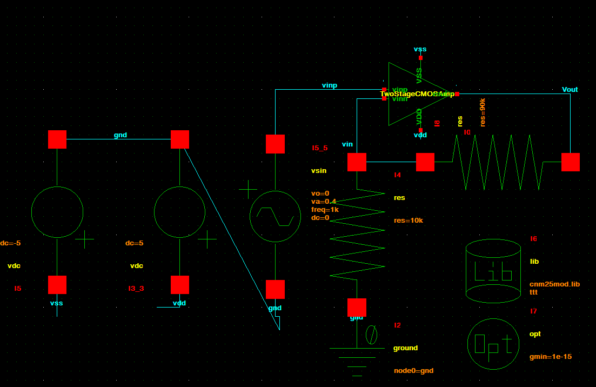
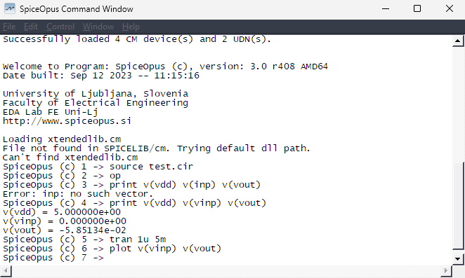
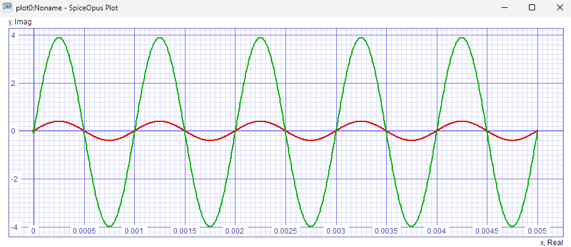

5. Simulate the Amplifier in SpiceOpus
Use the Glade → CDL export → SpiceOpus flow here. Do not use Glade’s
Simulatemenu for this tutorial.
Goal: apply a 1 kHz, 0.4 V-peak sine and check for about gain = 10.
1. Create a simulation schematic
Create a new Glade cell named Test with a schematic view.
Place your amplifier symbol.
2. Make the ±5 V supplies
Place two SPICE3Lib → vdc sources.
+5 V rail
Set:
dc = 5
Connect it exactly like this:
top terminal = VDD
bottom terminal = gnd
-5 V rail
Set the second source to:
dc = 5
Reverse its connection:
top terminal = gnd
bottom terminal = VSS
With dc = 5, this makes VSS = -5 V.
3. Add SPICE ground
- Place
SPICE3Lib → groundanywhere. - Press q.
- Set:
node0 = gnd
The ground symbol has no wire pin. Use the net name gnd on the actual ground wires.
4. Add the sine input
Place SPICE3Lib → vsin.
Press q and set:
vo = 0
va = 0.4
freq = 1k
dc = 0
Connect the source between vinp and gnd.
5. Set gain = 10
Use two SPICE3Lib → res resistors:
vout --- 90k --- vinn --- 10k --- gnd
Because:
1 + 90k/10k = 10
6. Add the CNM25 model library
Place SPICE3Lib → lib.
Press q and enter exactly:
filename = 'cnm25mod.lib'
section = ttt
The single quotes around the filename are required by SpiceOpus.
7. Add the SPICE option
Place SPICE3Lib → opt.
Press q and set its options string to:
gmin=1e-15
8. Final schematic check
Your test circuit should look like this:

Click Check → Check CellView.
Continue only when you have:
0 warnings, 0 errors
9. Export the SPICE file
- Click File → Export → CDL.
- Save directly into:
apdk/spiceopus/Test.cir
- Make sure Add .end for SPICE is enabled.
- Export.
The menu says CDL, but for simulation type the output filename as
Test.cir.
10. Run SpiceOpus
- Open
apdk/spiceopus/. - Launch
spiceopus.bat(Windows) orspiceopus.sh(Linux). - At the prompt, enter:
source Test.cir
If it says Failed to open Test.cir, make sure Test.cir is actually inside apdk/spiceopus/.
A startup warning about missing xtendedlib.cm can be ignored for this transistor-only test.
If SpiceOpus complains that the .lib filename needs single quotes, return to Glade and set:
'cnm25mod.lib'
11. Plot input and output
Run:
tran 1u 5m
Then:
plot v(vinp) v(vout)
Expected quick check:
- Input: about ±0.4 V
- Output: about ±4 V
- Gain: about 10


Optional DC check
Before tran, you can run:
op
print v(vdd) v(vinp) v(vout)
For this sine test, keep the source DC value at 0.